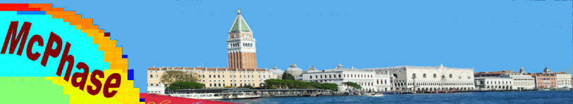
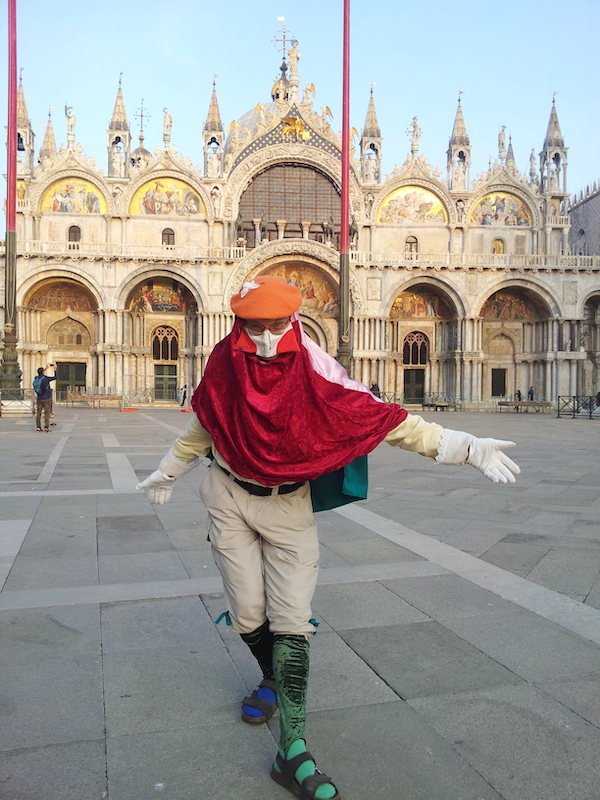
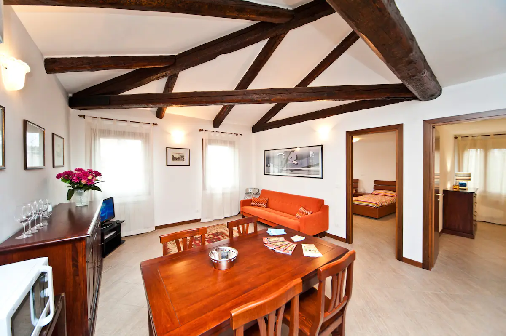
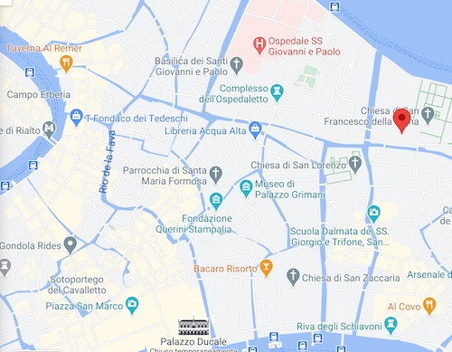

McPhase MicroWorkshop
29. Jan. - 2. Feb. 2024,
Venice, Italy
|  |
Workshop Aims
Costs
Registration
Programme
Location Information
Organisation and Contact Information
Workshop Aims
This workshop in Venice aims to bring together new Users of McPhase with experienced
Scientists working in the field.
The small number of participants allows
to focus on individual research topics and discuss basic use and advanced simulation
techniques.
Costs
Registration: �340
Includes: All academic sessions, teas and coffees, cultural program.
Note, that in case of Pandemia related travel problems, the workshop sessions will be online.
Accomodation (subject to availability on a first notice first serve basis): 350 Euro + tourist tax
Includes: room at the conference location Sunday 28.1. - Saturday 3.2.
- one twin bed room with two separate beds and one queen bed room is available,
joint bath, guest toilet, common kitchen, washing machine.
Account Information for Transfer
IBAN number etc will be emailed after submitting the registration form.
Registration
The number of participants is restricted.There are no invited talks.
Registration Deadline (extended): 15th November 2023
After
submission of your application form to mcphase[at]icloud.com details of
registration will be mailed.
Registration
is completed after receiving of payment.
Programme
Format
The workshop will consist of a series of academic and practical sessions and trainings in a relaxed
setting,
with plenty of time for discussion and focus on individual scientific topics
of the participants.
The schedule and the topics will be shaped according to individual wishes of the participants.
Topics:
- Program Installation,
- Simulation of Single Ion Properties - Crystal Fields,
- Magnetic Order and Phase Diagrams,
- Magnetic Excitations,
- Neutron Scattering,
- Magnetic Structures,
- Phase Diagrams,
- Magnetic diffraction,
- Mulipolar Order,
- Diffuse scattering,
- Cluster Calculations
- Crystal Field Phonon Interaction
Sunday
12:00 - 20:00 Pick Up Service at Venezia Santa Lucia Train Station or Vaporetto Station Celestia or Ospedale and Walk through Venice to the Conference Location for Early Arrivals (please announce your time of arrival)
Monday
9:30 Early Arrivals get together
12:00 Lunch break
14:30 Welcome and Introduction
14:30 Academic Session
16:00 Coffee break
16:30 Academic Session
Tuesday
9:30 Academic Session
12:00 Lunch break
14:30 Individual Training and Discussion Session
16:00 Coffee break
16:30 Individual Training and Discussion Session
Wednesday
9:30 Academic Session
12:00 Lunch break
14:30 Individual Training and Discussion Session
16:00 Coffee break & Micro Concert
16:30 Individual Training and Discussion Session
Thursday
9:30 Academic Session
12:00 Lunch break
14:30 Individual Training and Discussion Session
16:00 Coffee break
16:30 Individual Training and Discussion Session
Friday
9:30 Academic Session
12:00 Lunch break
14:30 Individual Training and Discussion Session
16:00 Good Bye Coffee
Location Information
Workshop Venue
|
APPARTMENT SAN FRANCESCO Calle de la Nunziatura Sestiere Castello n. 2792, 3rd floor 30422 Venezia |
 |  |  |
 |
In case of Pandemia related travel problems, the workshop will be online.
Directions and travel info:
Arriving by train at Venezia St. Lucia train station:
You will find all necessary
information and maps under fahrkarten.bahn.de
Either a long walk or by Vaporetto ACTV, Line 5.2 to "Celestia" (circa 30 min.)
Arriving by plane at Venezia Airport:
There is a boat service from Venice Airport to the historic center station "Ospedale" with Vaporetto blue line ."linea blu" (circa 45 min)
Organisation and Contact Information
Tomomi Okuno, Martin Rotter
The McPhase Project
Email: mcphase{at}icloud.com
Web: https://mcphase.github.io/webpage
last
update